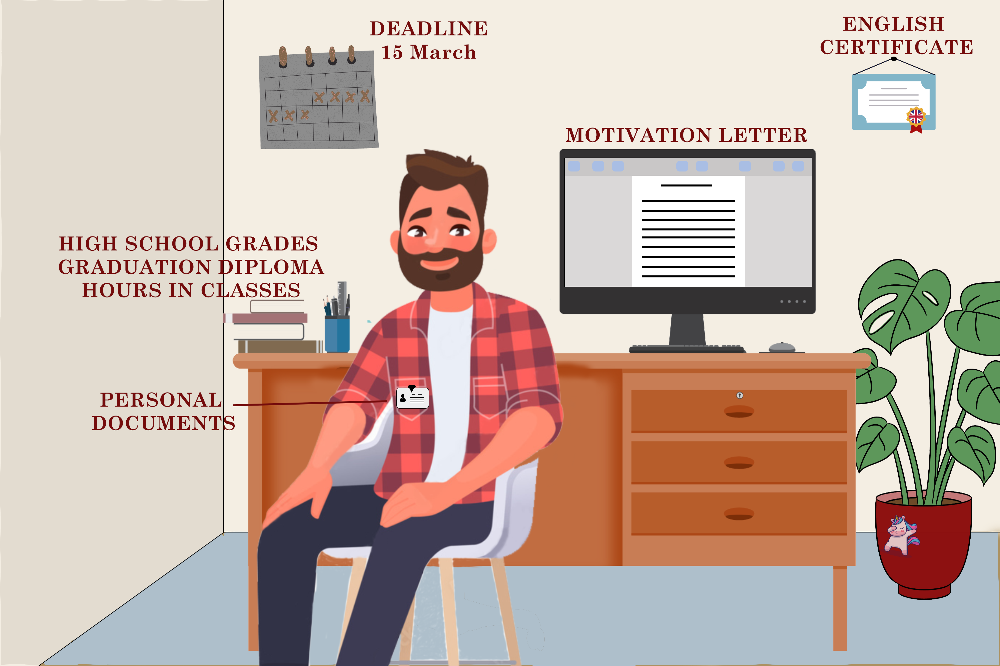

Post created by Gabi

Post created by Dora

Documents you need
First, it’s important to know that the deadline for the application is 15 March. You must collect and send these before that.
Motivation letter
Almost the most valuable paper you need to have. Here you can tell anything, which could earn a place you in the Academy. We have a separate article on this topic, make sure to look at that as well.
English Certificate
There are different ways how you can have this paper. One of the easiest is to take an Oxford placement test, but if you have any preferences, you can check on every school’s website what they ask for.
Grades and Hours
You can find a form on the Business Academy’s website, which you must fill in and sign by the headmaster of you High School. You must fulfill the criteria, which is founded on the same website, from hours, you spent listening to certain lectures. Be aware, if you are still in High School at the time of the application, later you will have to submit your Graduation Diploma as well. If you already have it, you can do it at the same time.
Personal Documents
Usually this contains your passport and ID card. You must scan both sides of them.
+1
If you are applying for an AP programme, you will have to upload everything on Optagelse, at the same time choose your priority in schools too.
Another “trick”, which can make your application to stand out is to have additional documents. That means a few lines, as a proof that you achieved something or worked somewhere. You must sign them by an authority, e.g., your employer, or if you publicized a book, then with the company you did that with. All of this will give you a plus.
We wish you all the best in the application process, and remember:
Be fast, time is running!
Important links:
https://www.baaa.dk/programmes/guidelines-on-how-to-apply/
https://www.optagelse.dk